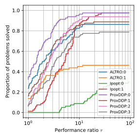
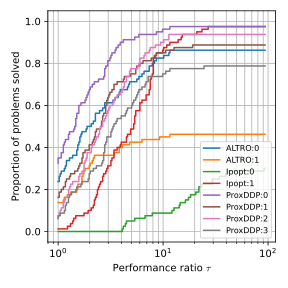

Abstract
Trajectory optimization has been a popular choice for motion generation and control in robotics for at least a decade. Several numerical approaches have exhibited the required speed to enable online computation of trajectories for real-time of various systems, including complex robots. Many of these said are based on the differential dynamic programming (DDP) algorithm—initially designed for unconstrained trajectory optimization problems— and its variants, which are relatively easy to implement and provide good runtime performance.
However, several problems in robot control call for using constrained formulations (e.g., torque limits, obstacle avoidance), from which several difficulties arise when trying to adapt DDP-type methods: numerical stability, computational efficiency, and constraint satisfaction. In this article, we leverage proximal methods for constrained optimization and introduce a DDP-type method for fast, constrained trajectory optimization suited for model-predictive control (MPC) applications with easy warm-starting.
Compared to earlier solvers, our approach effectively manages hard constraints without warm-start limitations and exhibits good convergence behavior. We provide a complete implementation as part of an open-source and flexible C++ trajectory optimization library called ALIGATOR. These algorithmic contributions are validated through several trajectory planning scenarios from the robotics literature and the real-time whole-body MPC of a quadruped robot.
Results
Benchmarks
An additional contribution of our journal paper is the inclusion of benchmarks against two other numerical solvers: IPOPT, which is a generic NLP solver often used in the OC community, and ALTRO, a tailored constrained solver.
 

More details can be found in Section VIII of the paper.